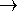

A {@linkplain org.geotools.display.canvas.AbstractCanvas canvas} contains one ore more {@linkplain org.geotools.display.canvas.AbstractGraphic graphic primitives}. A graphic primitive may be an image, a geometric shape, a collection of symbols, etc. Since this package can't cover all possible usages, most classes are designed with subclassing in mind. In the particular case of rendering targeting a Java2D output device, every kind of graphic primitive is handled by a specialized subclass ({@link org.geotools.display.primitive.GraphicImage2D}, {@link org.geotools.display.primitive.GraphicPolygon2D}, etc.) extending {@link org.geotools.display.canvas.GraphicPrimitive2D}. The first concrete canvas class capable to manage those graphic primitives is {@link org.geotools.display.canvas.BufferedCanvas2D}.
The base classes (up to {@link org.geotools.display.canvas.ReferencedCanvas} and its {@link org.geotools.display.canvas.ReferencedGraphic} counterpart) do not assume a two-dimensional rendering. They should be usable for a 3D rendering engine as well. The first subclasses targeting specifically a 2D rendering are {@link org.geotools.display.canvas.ReferencedCanvas2D} and its {@link org.geotools.display.canvas.ReferencedGraphic2D} counterpart.
In Geotools implementation, there is four {@linkplain org.opengis.referencing.crs.CoordinateReferenceSystem coordinate reference systems} involved in rendering. {@link org.geotools.display.canvas.AbstractCanvas} declares abstract methods for three of them, but the actual CRS management is performed in the {@link org.geotools.display.canvas.ReferencedCanvas} subclass. The CRS are enumerated below (arrows are {@linkplain org.opengis.referencing.operation.MathTransform transforms}):
| data CRS  {@linkplain org.geotools.display.canvas.AbstractCanvas#getObjectiveCRS objective CRS} {@linkplain org.geotools.display.canvas.AbstractCanvas#getDisplayCRS display CRS} {@linkplain org.geotools.display.canvas.AbstractCanvas#getDeviceCRS device CRS} |
In the {@link org.geotools.display.canvas.BufferedCanvas2D} implementation, when a graphic needs a refresh, the canvas invokes its {@link org.geotools.display.canvas.GraphicPrimitive2D#paint paint(...)} method. The paint method receives indirectly (through {@link org.geotools.display.canvas.RenderingContext}) a {@link java.awt.Graphics2D} object in the default Java2D state. This default state uses a coordinate reference system (named display CRS above) with properties as below:
| Axis origin (0,0): | Screen or paper Upper Left corner. |
|---|---|
| Axis directions: | x values increasing right and y values increasing down. |
| Axis units: | Pixels or points (about 1/72 of inch). |
| Line width: | One pixel or one point (1/72 of inch). |
This configuration is appropriate for text rendering. A font may be 12 points high, which usually means 12 pixels on a screen output device or 1/6 of inch on a paper. The {@code paint(...)} method may apply temporary changes to the {@link java.awt.Graphics2D} configuration, but shall rollback {@code Graphics2D} to its inital state before to return.
In some occasions, a graphic may wish to performs its rendering directly in "real world" coordinates. This is called objective CRS above. It can be set through a call to a {@link org.geotools.display.canvas.RenderingContext#setGraphicsCRS setGraphicsCRS} convenience method and usually has the following properties:
| Axis origin (0,0): | Objective CRS dependent. Often outside the displayed area. |
|---|---|
| Axis directions: | Objective CRS dependent. Usually x values increasing right and y values increasing up, like classical geometry. |
| Axis units: | Objective CRS dependent. Usually "real world" meters (not meters on the output device!), sometime longitude and latitude degrees. |
| Line width: | Map resolution dependent. May be 50 "real world" meters for example. |
This configuration is convenient for rendering "real world" objects. With such CRS, the {@code GraphicPrimitive2D} implementor doesn't need to care about the scale factor. However, this configuration is unconvenient for text or symbols rendering. For example a font with a size of 12 units will be understood as a 12 meters high font. On a map with a 1:50000 scale, 12 meters high characters will appear like tiny points.
Java2D converts "real world" coordinates into a output device coordinates using an instance of the {@link java.awt.geom.AffineTransform} object. An affine transform can be represented as a 3×3 matrix. Using the appropriate coefficients, one can apply any combinations of scale, translation, rotation and shear. The equation below assumes that input coordinates are in meters and output in pixel units, but the same equation can be used with most units:

The {@link java.awt.geom.AffineTransform} class provides a set of methods for changing an affine transform without worrying about the underlying mathematic. For example the {@code rotate(...)} method modifies the coefficients of the 3×3 matrix in order to add a rotation effect given a simple angle in radians. In the context of map rendering, there is a useful identity not mentioned in the class javadoc:
 and
and
 are unvariant under rotations.
are unvariant under rotations.
If there is no rotation and no shear, then the m01 and m10 coefficients are null. The remaining m00 and m11 coefficient give us the map scale among x and y axis respectively. In this simple case, the usual {@code getScaleX()} and {@code getScaleY()} methods work.:
= m00 = AffineTransform.getScaleX()
= m11 = AffineTransform.getScaleY()
But if there is a rotation (but no shear), then the {@code getScaleX()} and {@code getScaleY()} methods do not work anymore. We need to use the relationships on the left side. Note that those relationships do not work neither in the presence of shear. But because the default Geotools {@code Canvas} implementation uses only scales, rotations and translations (no shear), implementors are encouraged to use the relationships on the left side all the time instead of the ordinary {@code getScaleX()} and {@code getScaleY()} methods. This is especially important since may "real world" coordinate systems swap their axis order (e.g. use (latitude, longitude) values instead of (longitude, latitude) values), which is similar to a rotation. {@code Graphic} implementations relying only on the ordinary {@code getScaleX()} and {@code getScaleY()} methods may fail to render a map in such coordinate systems.